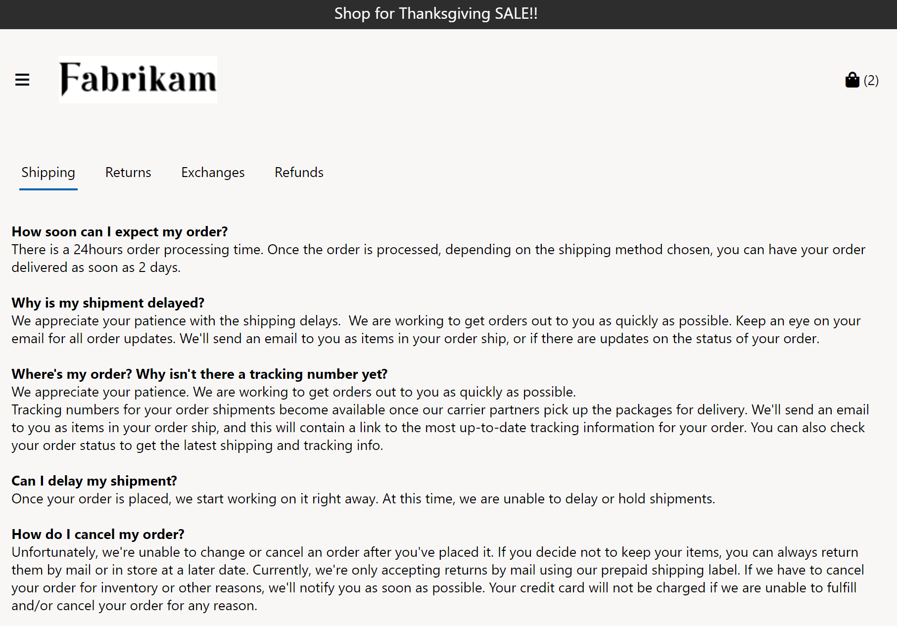

Tab module
This topic covers tab modules and describes how to add them to site pages in Microsoft Dynamics 365 Commerce.
Overview
Tab modules are container-like modules that are used to organize the information on a site page on tabs. They can be used on any page where information must be presented on tabs.
In every tab module, one or more tab item modules can be added. Each tab item module represents a single tab. In each tab item module, one or more modules can be added. There are no restrictions on the types of modules that can be added to a tab item module.
The following image shows an example of a tab module on a site page. In this example, the Shipping tab selected.

Tab module properties
| Property name | Values | Description |
|---|---|---|
| Heading | Text | This property specifies an optional text heading for the tab module. |
| Active Tab Index | Number | This property specifies the tab that should be active by default when a page is loaded. If no value is provided, the first tab item is active by default. |
Tab item module properties
| Property name | Values | Description |
|---|---|---|
| Title | Text | This property specifies the title text for the tab item module. |
Add a tab module to a page
To add a tab module to a page and set the properties, follow these steps.
- Use the Fabrikam marketing template (or any template that has no restrictions) to create a new page that is named Store policies page.
- In the Main slot of the Default page, select the ellipsis (...), and then select Add Module.
- In the Add Module dialog box, select the Container module, and then select OK.
- In the Container slot, select the ellipsis (...), and then select Add Module.
- In the Add Module dialog box, select the Tab module, and then select OK.
- In the property pane of the tab module, select Heading next to the pencil symbol.
- In the Heading dialog box, under Heading Text, enter heading text (for example, Policies). Then select OK.
- In the Tab slot, select the ellipsis (...), and then select Add Module.
- In the Add Module dialog box, select the Tab item module, and then select OK.
- In the property pane of the tab item module, under Title, enter title text (for example, Delivery).
- In the Tab item slot, select the ellipsis (...), and then select Add Module.
- In the Add Module dialog box, select the Text block module, and then select OK.
- In the property pane of the text block module, under Rich text, enter a paragraph of text.
- In the Tab slot, add a few more tab item modules that have titles. In each tab item module, add a text block module that has content.
- Select Save, and then select Preview to preview the page. The page will show a tab module that contains tab item modules have the content that you added.
- Select Finish editing to check in the page, and then select Publish to publish it.